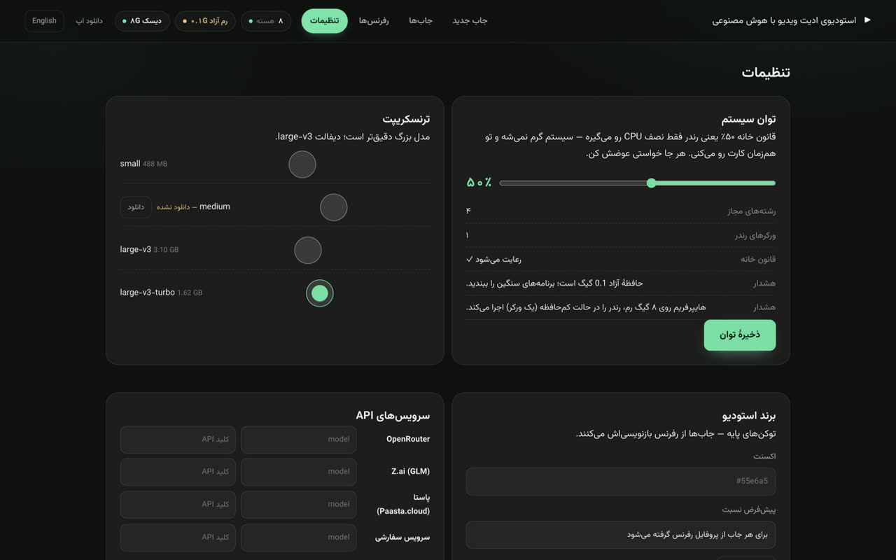
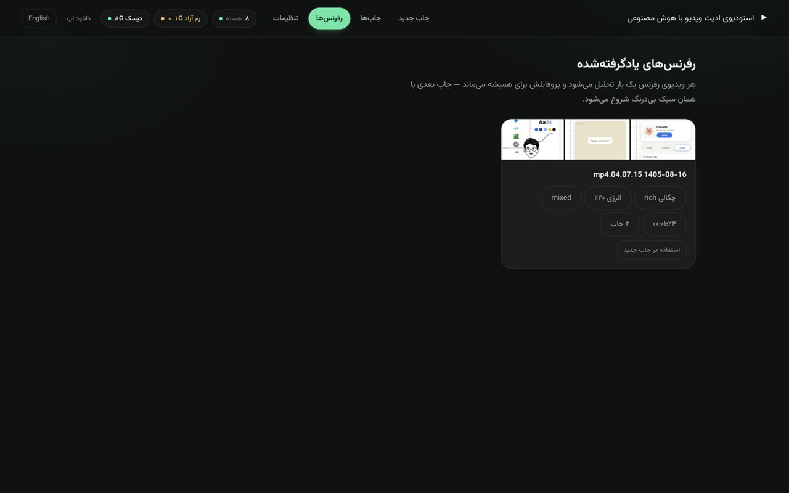

استودیوی ادیت ویدیو با هوش مصنوعی
دو تا فایل بده — ویدیوی خودت و یه ویدیوی رفرنس — بقیهش با ایجنتی که خودت انتخاب میکنی: ترنسکریپت دقیق فارسی، درک محتوا، سناریو، دمو و ادیتِ چتطور، تا خروجی تمیز ۳۰ فریم. Two files in — your video and a reference — one finished edit out, at 30 fps.
داخل اپ چطوریه؟




چه کارهایی برات میکنه؟
ویدیوی خودت + یه ویدیوی رفرنس. سبک رفرنس پیکسلپرفکت تحلیل میشه — ریتم، ترنزیشن، پالت — و روی فیلم تو پیاده میشه.
whisper آفلاین با مدل بزرگ، بعد دروازهٔ بازبینی: هر خط قابل ویرایش، کلیک روی ساعت = پرش ویدیو.
«تراکم بیشتر»، «زیرنویس بالاتر»، «خط ۳: …» — بگو، اعمال میشه و دموی تازه میاد. تا تایید تو هیچی نهایی نمیشه.
۱۰۸۰×۱۹۲۰ یا ۱۹۲۰×۱۰۸۰، زیرنویس کلمهبهکلمهٔ Vazirmatn داخل حاشیهٔ امن پلتفرم، صداگذاری اندازهگیریشده.
هر رفرنس یه بار تحلیل میشه و برای همیشه میمونه — جاب بعدی با همون سبک بیدرنگ شروع میشه.
ادیت رو opencode / zcode / claude code / codex انجام میده یا مغز API خودت — کلیدها توی تنظیمات خودته.
مسیر هر جاب
نصب — قدم به قدم
- فایل dmg رو از دکمهٔ بالا بگیر (حدود ۱۹۳ مگ).
- dmg رو باز کن و Video Studio رو بکش داخل Applications.
- چون بتا امضای دیجیتال نداره، اولین اجرا: راستکلیک روی اپ → Open → Open. از اجرای دوم عادیه.
- داخل اپ: تنظیمات → ترنسکریپت → مدل large-v3 رو دانلود کن (یه بار برای همیشه). تمام!
- فایل Setup.exe رو از دکمهٔ بالا بگیر (حدود ۱۴۴ مگ).
- اگه SmartScreen پیام داد: More info → Run anyway — چون بتا هنوز امضا نداره.
- مراحل نصب رو برو (میتونی مسیر نصب رو عوض کنی) و اپ رو باز کن.
- تنظیمات → ترنسکریپت → مدل large-v3 رو دانلود کن. تمام — Node و ffmpeg داخل خود اپ هستن.
چند تا سوال پرتکرار
نه — Node، npm/npx، ffmpeg و ffprobe داخل خود اپ هستن. فقط اولین رندر اینترنت میخواد (Chrome headless و رانتایم whisper یه بار دانلود میشن).
رندرها با قانون خانه روی ۵۰٪ توان CPU قفلان — سیستم گرم نمیشه و همزمان میتونی کارت رو بکنی. از تنظیمات عوضش هم میتونی بکنی.
خودکار — اپ از GitHub Releases چک میکنه (شروع + هر ۶ ساعت)، دانلود میکنه و با یه کلیک نصب میشه. دستی هم دکمهٔ «بررسی بهروزرسانی» هست.
بتا کاملاً رایگانه. کلیدهای API اگه از سرویس خودت استفاده کنی با خودته — رندر همیشه روی سیستم خودت انجام میشه و هیچ ویدیویی جایی آپلود نمیشه.